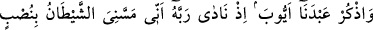
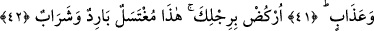
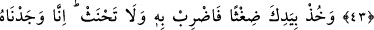
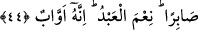
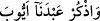
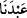

EYYÛB (A.S.)
NE İYİ KULDUR
41. (Rasûlüm!) Kulumuz Eyyûb’u da an. O, Rabbine: Doğrusu şeytan bana bir
yorgunluk ve meşakkat verdi, diye seslenmişti.
42. Ayağını yere vur! İşte yıkanacak ve içilecek soğuk bir su (dedik).
43. Bizden bir rahmet ve olgun akıl sâhipleri için de bir ibret olmak üzere ona
hem âilesini hem de onlarla beraber bir mislini bağışladık.
44. Eline bir demet sap al da onunla vur, yeminini böyle yerine getir. Gerçekten
biz Eyyûb’u sabırlı (bir kul) bulmuştuk. O, ne iyi kuldu! Dâimâ Allah’a yönelirdi.
(
) “(Rasûlüm!) Kulumuz Eyyûb” b. Âmûs b. Râzih b. Rûm b. ‘Îs b. İshâk
b. İbrahim’i (a.s.) “de an.”
Eyyûb’un (a.s.) annesi Lût b. Hârân’ın (a.s.) torunlarından olup hanımı da Efrâyîm b.
Yûsuf’un (a.s.) kızı Rahme veya Ya’kub’un (a.s.) kızı Liyâ’dır. -Nitekim buna
dayanılarak Keşfü’l-esrâr’da ‘Eyyûb’un (a.s.) Ya’kub (a.s.) zamanında yaşamış olduğu
söylenmiştir.- Ya da Mîşâ b. Yûsuf’un (a.s.) kızı Mâhîr’dir. Hanımıyla ilgili en meşhur
görüş birincisidir, yâni hanımının ismi Rahme’dir.
Kurtubî der ki: “Doksan üç senelik ömrüne rağmen Eyyûb’a (a.s.) üç kişiden başka
kimse îman etmedi.”
Âyetteki (
) ifâdesi, (
) yâni “kulumuz” ifâdesinin kim olduğunu açıklayan bir
atıftır (atf-ı beyân).
“Kulumuz Eyyûb’u da an” demek, “kulumuz Eyyûb’un yapmış olduğu şu nidayı da
an,” demektir.
“Hani o, Rabbine:” zorda kalmış muhtaçların yakarış ve duâsıyla “Doğrusu şeytan
bana” ulaştı ve “bir yorgunluk ve meşakkat verdi, diye seslenmişti.”
(
) ifâdesi, (
) lâfzından bedeldir. (
) fiili, (
) anlamında olduğundan